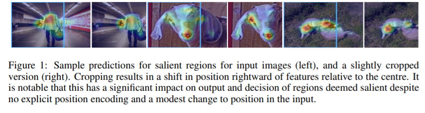
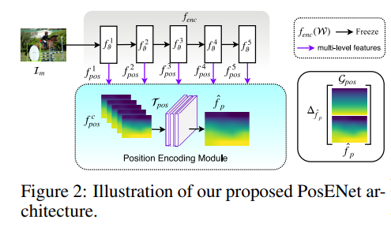
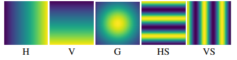
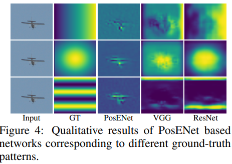
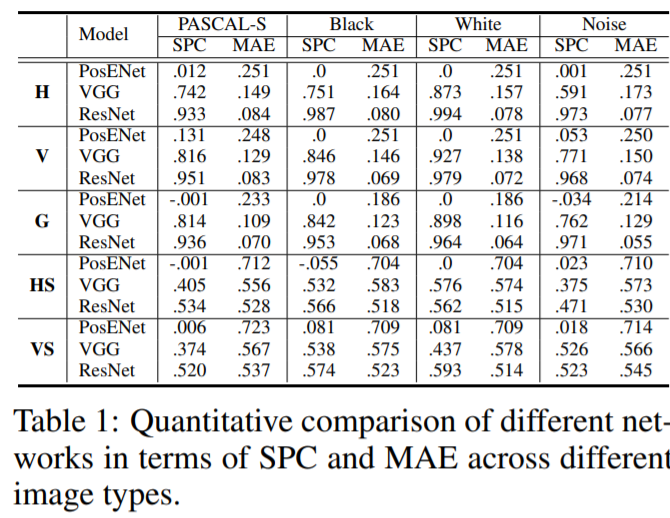
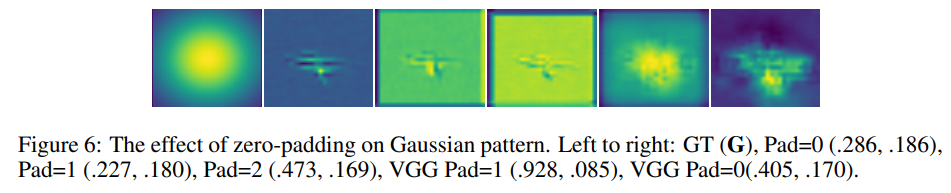

前言
这篇文章解释了CNN是怎么学到图片内的绝对位置信息。探究了CNN到底有没有编码位置信息，这些位置信息在哪些神经元中被编码、这些位置信息又是如何被暴露给神经网络学习的。
这是一篇ICLR2020接收的文章。此前，关注位置信息编码只在NLP的任务中，因为字符位置不同，文本表达的语义不同。但是，CV一直没有这个明显的需求，大家一致认为CNN具有平移不变性。在CV的三大物体感知任务中，分类不需要位置信息，语义分割关注的是像素级别的语义分类，也不觉得需要位置信息(其实位置信息很有用)；也许你会觉得物体检测会用到位置信息，然而，物体检测模型都是通过检测Anchor中的特征做分类工作，最后得到的坐标信息来自于Anchor。
 上图一共有三组图片，每组由原图和剪切图构成。可以发现，显著区域将会因为图片中心位置的改变而改变。
Position Encoding Network
 作者提出了一种提取位置的模型Position Encoding Network(PosENet)。首先挑选VGG和ResNet作为特征提取网络，接着从浅层到深层提取5个leve的特征送入PosENet。其中用bi-linear插值到同一size后concat。最后PosENet的输出是一张能表示位置信息的gradient-like。PosENet模型提取出真实的位置信息，对作者添加的梯度状的图片GT进行拟合。梯度状图片GT图片如下：  如果在分类任务上训练的前馈网络能够隐式的学到位置信息，那么作者设计的位置编码模块经过训练后就能对隐藏的位置信息与梯度状的图片GT之间的关系进行建模，如果特征图中没有编码的位置信息，那么输出将是随机的。
具体实验
实验效果
作者做了如图所示的实验：  其中最左边一列是输入，第二列是GT，第三列是没有backbone直接接入position encoding module，第四列用VGG backbone，第五列resnet backbone。其中backbone的参数都冻结，position encoding module都不padding。
第三列表明没有backbone的pretrain权重，网络无法通过输入直接映射到gt。在没有padding的情况下，输出只会响应在输入的具体内容上，不能预测和内容无关的位置信息。第四、五列说明了pretrain的网络输出的特征中编码了位置信息，这帮助了后面接的position encoding module预测到gt。
实验数据
下图可以看出PosENet（VGG和ResNet）可以很容易地从经过训练的CNN模型中提取位置信息，特别是基于ResNet的PosENet模型。然而，单独训练PosENet（PosENet）直接从图像来预测的得分要低得多(并且越深的特征层效果越好)。这一结果表明，仅从输入图像中提取位置信息是非常困难的。只有与深度编码网络相耦合，PosENet才能提取出与地面真实位置图一致的位置信息。 
padding影响
从下图可以看出，随着pad数增加，可视化结果越接近gt。 
文章最终得到的结论
CNN隐性的编码了位置信息，并且随着网络层数的增加和卷积核的增加，即感受野的增加，能够更好的编码位置信息。其中，这个位置信息是由zero-padding造成的，图像边缘的zero-padding提供了图像的边界信息。本来，网络是不知道每个像素点或者特征点的位置。但是，通过padding的zero，提供给模型一个相对位置信息，知道每个特征点距离zero边界的距离信息。
论文地址：How much position information do convolutional neural networks encode? 公众号:深度学习视觉